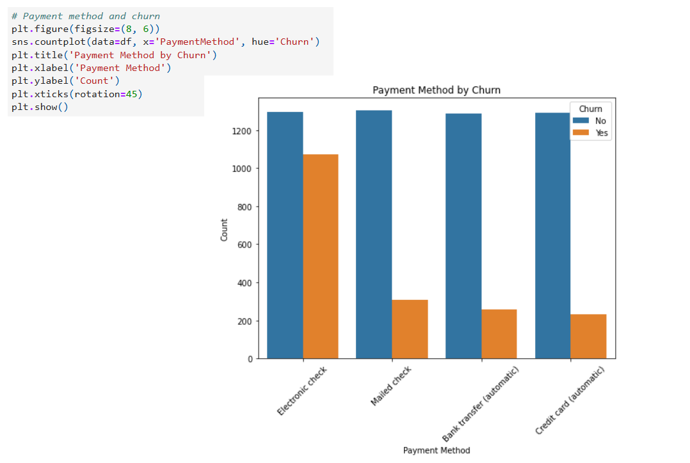
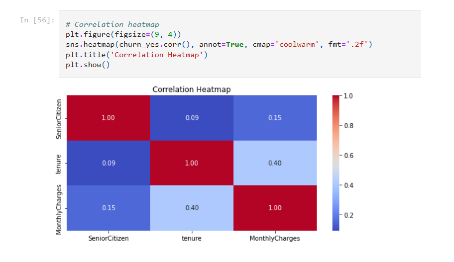
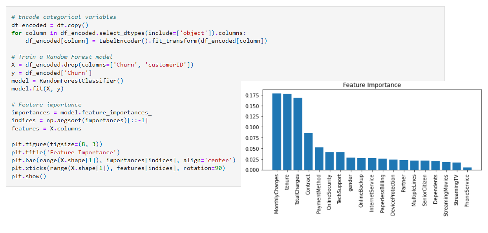

Zjawisko rezygnacji klientów, stanowi jedno z głównych wyzwań w branży telekomunikacyjnej. Celem tego projektu było przeprowadzenie szczegółowej analizy danych dotyczących klientów, w tym ich cech demograficznych, historii subskrypcji, preferencji dotyczącej usług oraz metod płatności w kontekście decyzji o rezygnacji z usług. Analiza została zrealizowana w języku Python przy użyciu Jupyter Notebook z zastosowaniem technik eksploracji i modelowania danych. Główne założenie projektu stanowiło identyfikację kluczowych czynników, które wpływają na decyzje klientów o rezygnacji, co pozwoliło na wyodrębnienie istotnych wzorców i zrozumienie dynamiki tego zjawiska. Uzyskane wnioski mogą stanowić podstawę do opracowania skutecznych strategii mających na celu zwiększenie poziomu lojalności oraz spadek retencji klientów w branży telekomunikacyjnej.

Rys. 1. Przykładowa analiza danych przy pomocy Python - metoda płatności za usługi telekomunikacyjne a rezygnacja klientów.
Opis wykonanych prac
Wczytanie danych i wstępna eksploracja - zestaw danych został załadowany do ramki danych Pandas (Data frame - dwuwymiarowa struktura danych podobna do tabeli w bazie danych lub arkusza kalkulacyjnego Excela). Sprawdzono strukturę danych, w tym ich rozmiar, nazwy kolumn i podstawowe statystyki, aby uzyskać ogólny obraz zestawu danych.
Czyszczenie danych i weryfikacja kompletności danych - przeprowadzono wstępne sprawdzenie danych pod kątem brakujących wartości oraz nieprawidłowości danych.
Analiza danych - w celu lepszego zrozumienia danych oraz czynników, które mogą mieć znaczenie przy podejmowaniu decyzji o rezygnacji klientów usług, zostały przeprowadzone następujące analizy:
Rozkład klientów - przeanalizowano proporcje klientów, którzy odeszli oraz tych, którzy pozostali, aby zrozumieć ich udział w zestawie danych
Dystrybucja płci
Preferencje dotyczące płatności a rezygnacje klientów
Dystrybucja stażu - przeanalizowano, czy długość korzystania z usług wpływa na rezygnację klientów
Rodzaj usługi internetowych, z których korzystają klienci
Rodzaje umów klientów a rezygnacja klientów
Wysokość opłat a rezygnacja klientów
Korzystanie z konkretnych usług internetowych oraz telefonicznych w kontekście odpływu klientów
Analiza Heatmapy Korelacji - w projekcie przeprowadzono analizę korelacji między różnymi cechami o charaketrze liczbowym, aby zrozumieć zależności między poszczególnymi zmiennymi. Wykorzystano Heatmapę Korelacji do wizualizacji tych zależności, co pozwoliło na łatwe identyfikowanie silnych i słabych korelacji między różnymi atrybutami, takimi jak wysokość opłat, staż klientów. Do obliczeń użyto korelację Pearsona, która jest wykorzystywana do badania zmiennych liczowych o rozkładzie zbliżonym do rozkładu normalnego. status klientów. Analiza ta może pomóc zrozumieć, które cechy mają największy wpływ na pozostałe, a także dostarczyć wskazówek odnośnie kolejnego kierunku analizy.

Rys. 2. Heatmapa badania korelacji między zmiennymi.
Analiza Ważności Cech przy użyciu Random Forest - w celu dalszej oceny tego, które cechy mają największy wpływ na decyzję klientów o rezygnacji, przeprowadzono analizę ważności cech z wykorzystaniem algorytmu Random Forest, który jest wykorzystywany w badaniu zarówno cech liczbowych jak i nie liczbowych.
Algorytm umożliwił ocenę, jak poszczególne zmienne wpływają na przewidywanie odejścia klientów, dostarczając cennych informacji o tym, które cechy są najistotniejsze w modelowaniu. Dzięki tej analizie możliwe było zidentyfikowanie kluczowych czynników, które miały największy wpływ na decyzję klienta o rezygnacji.

Rys. 3. Wyniki analizy ważności cech z użyciem algorytmu Random Forest.
Zalety wykorzystania języka Python oraz Jupyter Notebook
Język Python to jedno z najpotężniejszych narzędzi w analizie danych, oferujące szeroki zestaw bibliotek takich jak Pandas, NumPy, Scikit-learn czy TensorFlow, które wspierają cały proces analizy danych, modelowania statystycznego oraz uczenia maszynowego. Jego elastyczność pozwala na manipulowanie danymi, czyszczenie ich oraz tworzenie wykresów i raportów.
Wykorzystanie Jupyter Notebook w tym kontekście doskonale wspiera ten proces, oferując interaktywne środowisko, które umożliwia łatwe eksperymentowanie z danymi i modelami danych. Dzięki możliwości bieżącego monitorowania wyników, dokumentowania kodu, dodawania wizualizacji oraz iteracyjnego testowania modeli, Jupyter staje się idealnym narzędziem do pracy nad takimi analizami, ułatwiając prezentację wyników w sposób przejrzysty i zrozumiały.
Raport w Power BI
Raport Coffe Shop wykonany w Power BI dotyczący analizy danych sprzedażowych.